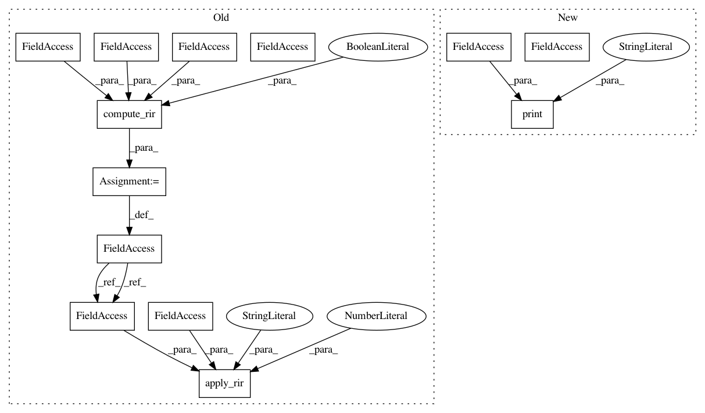

1fbb5253ee4db53498fde8766b55541546d9804a,pyroomacoustics/libroom_src/tests/test_ray_tracing_2D.py,,,#,151
Before Change
print(len(log), " entries to build the rir")
rir = compute_rir(log, time_thres, fs, plot=True)
apply_rir(rir, "0riginal.wav", fs, cutoff=0)
After Change
log = room.get_rir_entries(nb_phis, nb_thetas, source_pos, mic_radius, scatter_coef, time_thres, energy_thres, sound_speed)
print("\nNumber of phi : ", nb_phis)
print("Number of theta :", nb_thetas)
print("\nThere are", len(log), " microphone(s).")
print("(", nb_phis, "*", nb_thetas,") =", nb_phis * nb_thetas, " rays traced in ", time.time() - chrono, " seconds")
In pattern: SUPERPATTERN
Frequency: 3
Non-data size: 13
Instances
Project Name: LCAV/pyroomacoustics
Commit Name: 1fbb5253ee4db53498fde8766b55541546d9804a
Time: 2018-12-21
Author: cyril.cadoux@epfl.ch
File Name: pyroomacoustics/libroom_src/tests/test_ray_tracing_2D.py
Class Name:
Method Name:
Project Name: LCAV/pyroomacoustics
Commit Name: 0cb55813e0fe0e711fd6d72a5922a5c828648138
Time: 2018-12-19
Author: cyril.cadoux@epfl.ch
File Name: pyroomacoustics/libroom_src/tests/test_ray_tracing.py
Class Name:
Method Name:
Project Name: LCAV/pyroomacoustics
Commit Name: 1fbb5253ee4db53498fde8766b55541546d9804a
Time: 2018-12-21
Author: cyril.cadoux@epfl.ch
File Name: pyroomacoustics/libroom_src/tests/test_ray_tracing_2D.py
Class Name:
Method Name:
Project Name: LCAV/pyroomacoustics
Commit Name: 4c516c4b8c20474ed609761b7e56aac2f1d3f37c
Time: 2018-12-21
Author: cyril.cadoux@epfl.ch
File Name: pyroomacoustics/libroom_src/tests/test_ray_tracing_2D.py
Class Name:
Method Name: